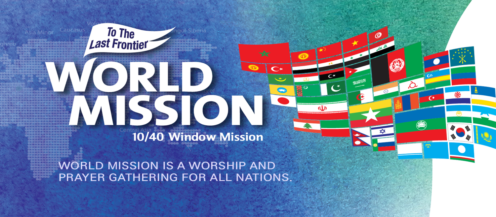
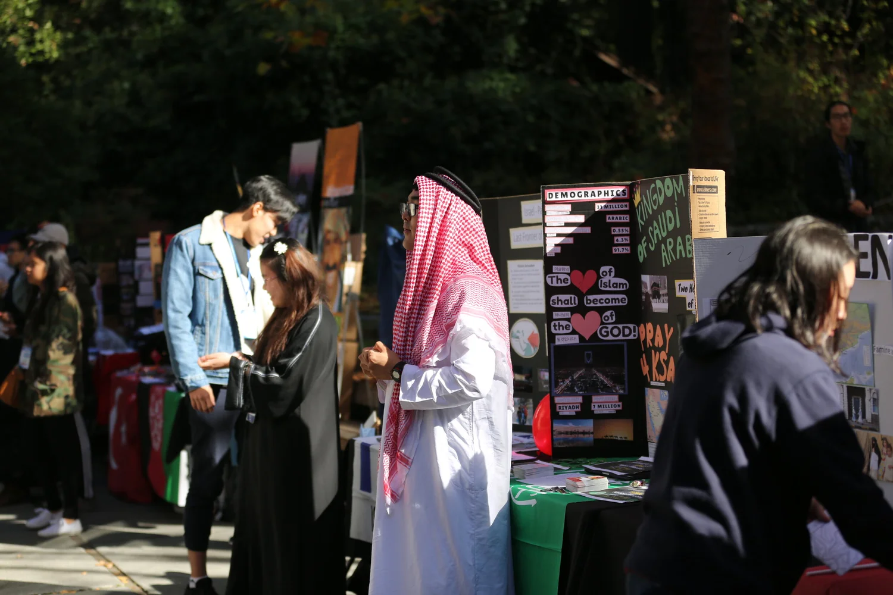

The Engine for Mission Revival
World Mission is a weekly to monthly worship service that aims to bring revival and spiritual restoration locally and to all nations. The purpose of World Mission is to intercede for local cities, unreached people groups, and missionaries on the mission field, as well as to raise up a holy army of missionaries and intercessors who will prepare the way for the Lord’s return. Participants will experience worship, testimonies from the mission field, and powerful proclamation of God’s Word.
“It was a wake-up call for me to remember that there are thousands of people in the nations dying every day without hearing the gospel.”
“I was so blessed to see so many young people gathered together to pray for the nations. I was so convicted through the message and was given a new passion to live for Jesus and the Gospel.”
- World Mission Participants
Through World Mission, we desire to see the restoration of mission movement in North America. May World Mission be the engine for mission revival!
To join or start World Mission in your area, refer to contact information below.
For more information, email us at northamerica@intercp.org.
